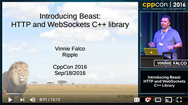

HTTP and WebSocket built on Boost.Asio in C++11
| Branch | Linux/OSX | Windows | Coverage | Documentation | Matrix |
|---|---|---|---|---|---|
| master |  |
 |
|||
| develop |  |
 |
 |
Contents
- Introduction
- Appearances
- Description
- Requirements
- Git Branches
- Building
- Usage
- License
- Contact
- Contributing
Introduction
Beast is a C++ header-only library serving as a foundation for writing interoperable networking libraries by providing low-level HTTP/1, WebSocket, and networking protocol vocabulary types and algorithms using the consistent asynchronous model of Boost.Asio.
This library is designed for:
-
Symmetry: Algorithms are role-agnostic; build clients, servers, or both.
-
Ease of Use: Boost.Asio users will immediately understand Beast.
-
Flexibility: Users make the important decisions such as buffer or thread management.
-
Performance: Build applications handling thousands of connections or more.
-
Basis for Further Abstraction. Components are well-suited for building upon.
Appearances
| Bishop Fox 2018 |
|---|
| CppCon 2017 | CppCast 2017 | CppCon 2016 |
|---|---|---|
|  |
Description
This software is in its first official release. Interfaces may change in response to user feedback. For recent changes see the CHANGELOG.
- Official Site
- Documentation (master branch)
- Autobahn|Testsuite WebSocket Results
Requirements
This library is for programmers familiar with Boost.Asio. Users who wish to use asynchronous interfaces should already know how to create concurrent network programs using callbacks or coroutines.
- C++11: Robust support for most language features.
- Boost: Boost.Asio and some other parts of Boost.
- OpenSSL: Optional, for using TLS/Secure sockets.
When using Microsoft Visual C++, Visual Studio 2015 Update 3 or later is required.
One of these components is required in order to build the tests and examples:
- Properly configured bjam/b2
- CMake 3.5.1 or later (Windows only)
Branches
The official repository contains the following branches:
-
master This holds the most recent snapshot with code that is known to be stable.
-
develop This holds the most recent snapshot. It may contain unstable code.
Each of these branches requires a corresponding Boost branch and all of its subprojects. For example, if you wish to use the master branch version of Beast, you should clone the Boost superproject, switch to the master branch in the superproject and acquire all the Boost libraries corresponding to that branch including Beast.
Or, to use the latest shipping version of Beast, simply use it from the corresponding distribution of Boost.
Building
Beast is header-only. To use it just add the necessary #include line
to your source files, like this:
#include <boost/beast.hpp>To build your program successfully, you'll need to add the Boost.System library to link with. If you use coroutines you'll also need to link with the Boost.Coroutine library. Please visit the Boost documentation for instructions on how to do this for your particular build system.
To build the documentation, examples, tests, and benchmarks it is
necessary to first obtain the Boost "superproject" along with sources of
all of the Boost libraries, then run the b2 command to build the Boost
libraries.
Instructions for doing so may be found on
the Boost Wiki.
These commamnds will build the programs and documentation that come
with Beast (omit the cxxflags parameter when building using MSVC):
cd boost # The directory containing the Boost superproject and libraries
b2 libs/beast/test cxxflags="-std=c++11" # bjam must be in your $PATH
b2 libs/beast/example cxxflags="-std=c++11"
b2 libs/beast/doc
On Windows platforms only, CMake may be used to generate a Visual Studio solution and a set of Visual Studio project files using these commands:
cd boost # The directory containing the Boost superproject and libraries
cd libs/beast
mkdir bin
cd bin
cmake .. # for 32-bit Windows builds, or
cmake -G"Visual Studio 14 2015 Win64" .. # for 64-bit Windows builds (VS2015), or
cmake -G"Visual Studio 15 2017 Win64" .. # for 64-bit Windows builds (VS2017)
The files in the repository are laid out thusly:
./
bin/ Create this to hold executables and project files
bin64/ Create this to hold 64-bit Windows executables and project files
doc/ Source code and scripts for the documentation
include/ Where the header files live
extras/ Additional APIs, may change
example/ Self contained example programs
meta/ Metadata for Boost integration
scripts/ Small scripts used with CI systems
test/ Unit tests
Usage
These examples are complete, self-contained programs that you can build
and run yourself (they are in the example directory).
http://www.boost.org/doc/libs/develop/libs/beast/doc/html/beast/quick_start.html
License
Distributed under the Boost Software License, Version 1.0. (See accompanying file LICENSE_1_0.txt or copy at http://www.boost.org/LICENSE_1_0.txt)
Contact
Please report issues or questions here: https://github.com/boostorg/beast/issues
Contributing (We Need Your Help!)
If you would like to contribute to Beast and help us maintain high quality, consider performing code reviews on active pull requests. Any feedback from users and stakeholders, even simple questions about how things work or why they were done a certain way, carries value and can be used to improve the library. Code review provides these benefits:
- Identify bugs
- Documentation proof-reading
- Adjust interfaces to suit use-cases
- Simplify code
You can look through the Closed pull requests to get an idea of how reviews are performed. To give a code review just sign in with your GitHub account and then add comments to any open pull requests below, don't be shy!
https://github.com/boostorg/beast/pulls
Here are some resources to learn more about code reviews:
- Top 10 Pull Request Review Mistakes
- Best Kept Secrets of Peer Code Review (pdf)
- 11 Best Practices for Peer Code Review (pdf)
- Code Review Checklist – To Perform Effective Code Reviews
- Code review guidelines
- C++ Core Guidelines
- C++ Coding Standards (Sutter & Andrescu)
Beast thrives on code reviews and any sort of feedback from users and stakeholders about its interfaces. Even if you just have questions, asking them in the code review or in issues provides valuable information that can be used to improve the library - do not hesitate, no question is insignificant or unimportant!